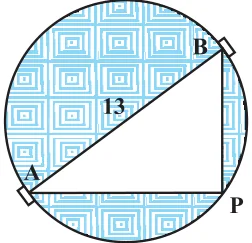

The equation \(ax^{2} + bx + c = 0\) are given by
\(x = \dfrac{-b \pm \sqrt{b^{2} - 4ac}}{2a}\)
If \(b^{2} - 4ac \gt 0\), we get two distinct real roots \(-\dfrac{b}{2a} + \dfrac{\sqrt{b^{2} - 4ac}}{2a}\) and \(-\dfrac{b}{2a} - \dfrac{\sqrt{b^{2} - 4ac}}{2a}\).
If \(b^{2} - 4ac = 0\), then \(x = -\dfrac{b}{2a} \pm 0\), i.e., \(x = -\dfrac{b}{2a}\) or \(-\dfrac{b}{2a}\).
So, the roots of the equation \(ax^{2} + bx + c = 0\) are both \(\dfrac{-b}{2a}\).
Therefore, we say that the quadratic equation \(ax^{2} + bx + c = 0\) has two equal real roots in this case.
If \(b^{2} - 4ac \lt 0\), then there is no real number whose square is \(b^{2} - 4ac\). Therefore, there are no real roots for the given quadratic equation in this case.
Since \(b^{2} - 4ac\) determines whether the quadratic equation \(ax^{2} + bx + c = 0\) has real roots or not, \(b^{2} - 4ac\) is called the discriminant of this quadratic equation.
So, a quadratic equation \(ax^{2} + bx + c = 0\) has
- (i)two distinct real roots, if \(b^{2} - 4ac \gt 0\),
- (ii)two equal real roots, if \(b^{2} - 4ac = 0\),
- (iii)no real roots, if \(b^{2} - 4ac \lt 0\).
Let us consider some examples.
Example 7 :
Find the discriminant of the quadratic equation \(2x^{2} - 4x + 3 = 0\), and hence find the nature of its roots.
Solution :
The given equation is of the form \(ax^{2} + bx + c = 0\), where \(a = 2\), \(b = -4\) and \(c = 3\). Therefore, the discriminant
\(b^{2} - 4ac = (-4)^{2} - (4 \times 2 \times 3) = 16 - 24 = -8 \lt 0\)
So, the given equation has no real roots.
Example 8 :
A pole has to be erected at a point on the boundary of a circular park of diameter 13 metres in such a way that the differences of its distances from two diametrically opposite fixed gates A and B on the boundary is 7 metres. Is it possible to do so? If yes, at what distances from the two gates should the pole be erected?
Solution :

Let us first draw the diagram (see Fig. 4.2).
Let P be the required location of the pole. Let the distance of the pole from the gate B be x m, i.e., BP = x m. Now the difference of the distances of the pole from the two gates = AP – BP (or, BP – AP) = 7 m. Therefore, AP = \((x + 7)\) m.
Now, AB = 13m, and since AB is a diameter,
\(\angle \text{APB} = 90^{\circ}\) (Why?)
Therefore, \(\text{AP}^{2} + \text{PB}^{2} = \text{AB}^{2}\) (By Pythagoras theorem)
i.e., \((x + 7)^{2} + x^{2} = 13^{2}\)
i.e., \(x^{2} + 14x + 49 + x^{2} = 169\)
i.e., \(2x^{2} + 14x - 120 = 0\)
So, the distance ‘x’ of the pole from gate B satisfies the equation
\(x^{2} + 7x - 60 = 0\)
So, it would be possible to place the pole if this equation has real roots. To see if this is so or not, let us consider its discriminant. The discriminant is
\(b^{2} - 4ac = 7^{2} - 4 \times 1 \times (-60) = 289 \gt 0\).
So, the given quadratic equation has two real roots, and it is possible to erect the pole on the boundary of the park.
Solving the quadratic equation \(x^{2} + 7x - 60 = 0\), by the quadratic formula, we get
\(x = \dfrac{-7 \pm \sqrt{289}}{2} = \dfrac{-7 \pm 17}{2}\)
Therefore, \(x = 5\) or \(-12\).
Since x is the distance between the pole and the gate B, it must be positive. Therefore, \(x = -12\) will have to be ignored. So, \(x = 5\).
Thus, the pole has to be erected on the boundary of the park at a distance of 5m from the gate B and 12m from the gate A.
Example 9 :
Find the discriminant of the equation \(3x^{2} - 2x + \dfrac{1}{3} = 0\) and hence find the nature of its roots. Find them, if they are real.
Solution :
Here \(a = 3\), \(b = -2\) and \(c = \dfrac{1}{3}\).
Therefore, discriminant \(b^{2} - 4ac = (-2)^{2} - 4 \times 3 \times \dfrac{1}{3} = 4 - 4 = 0\).
Hence, the given quadratic equation has two equal real roots.
The roots are \(\dfrac{-b}{2a}, \dfrac{-b}{2a}\), i.e., \(\dfrac{2}{6}, \dfrac{2}{6}\), i.e., \(\dfrac{1}{3}, \dfrac{1}{3}\).